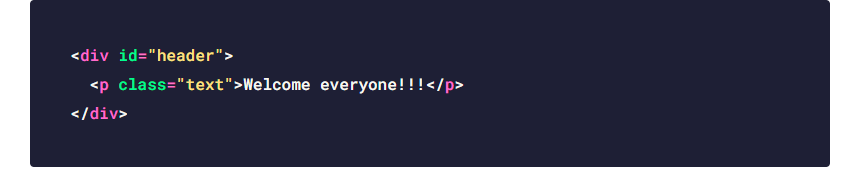
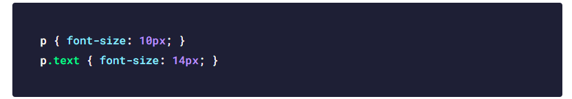
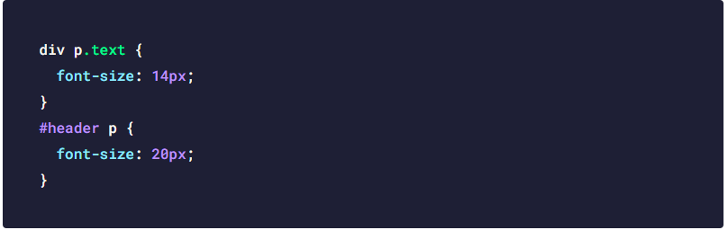
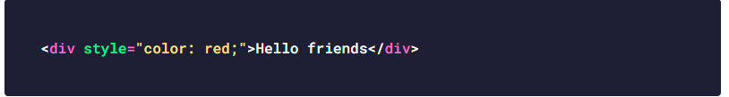
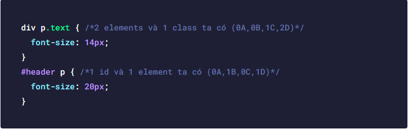
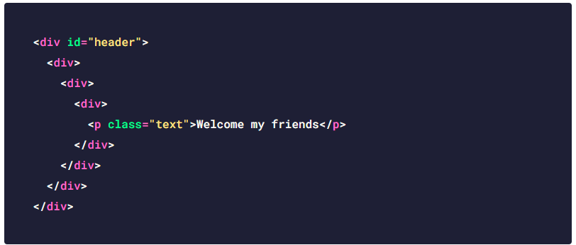
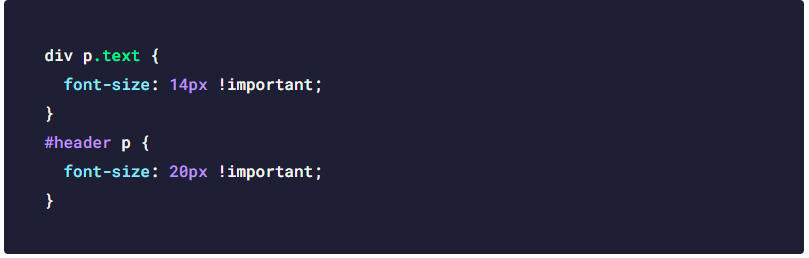
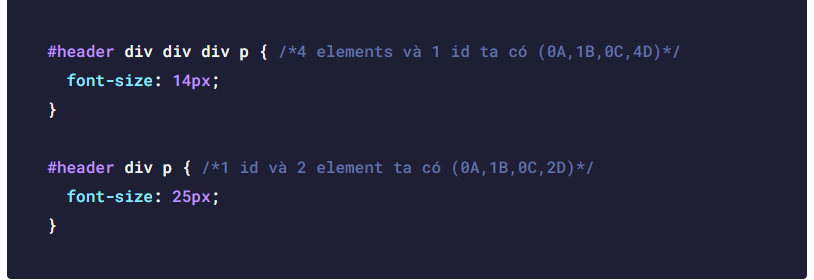
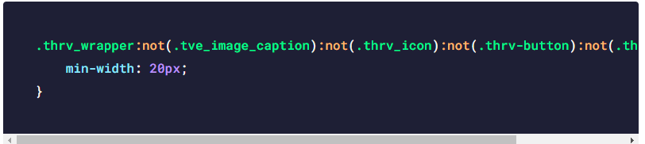

13/10/2020 evondev
Có bao giờ các bạn code CSS cho một site nào đó của bạn bè hoặc dự án công ty. Nhưng code CSS xong rồi nó lại không nhận, mặc dù đã đúng đường dẫn, check thấy rõ ràng nhưng lại không được kết quả như mong muốn. Và bạn nhận ra rằng ah thì ra có 1 đoạn code CSS ai đã code trước đó sử dụng #id, inline style hoặc !important
Ai dè mình code hoài sửa hoài mà CSS của mình nó không có chạy. Lúc này bạn mới nhận ra rằng độ ưu tiên trong CSS nó rất là quan trọng. Vì thế hôm nay chúng ta sẽ cùng tìm hiểu tất tần tật về độ ưu tiên trong CSS nó như thế nào nhé
Giả sử bây giờ chúng ta có đoạn code HTML và CSS đơn giản như sau


Các bạn đoán thử xem. Kết quả ra 10px hay là 14px ? Mình nghĩ hầu hết các bạn sẽ đoán đúng là 14px đúng không nào. Thứ nhất là vì nó nằm dưới nên độ ưu tiên nó cao hơn, thứ hai là nó có thêm class .text kèm theo nữa. Chà dễ quá dễ, nếu như vậy thì cần gì phải học nhỉ. Đừng vội mừng. Tiếp tục xem ví dụ dưới đây nà.

Ấy chà chà khó hơn rồi đây. Không code chạy thử nhé vì chúng ta cần hiểu và làm chớ code ra thì dễ rồi. Chỗ này người nào đã từng làm nhiều thì sẽ biết ngay thôi tuy nhiên người mới sẽ nghĩ là chắc là font-size: 14px rồi vì nó có 3 cái luôn như là thẻ div bọc ngoài rồi đến thẻ p kèm theo class .text chắc chắn là ưu tiên hơn ở dưới rồi. Nhưng kết quả lại không nghiêng về người mới. Kết quả là người có kinh nghiệm đúng là font-size: 20px .Tại sao ? Tại vì #id nó ưu tiên hơn thẻ bình thường hơn class nên nó sẽ lấy CSS đoạn ở dưới thôi. Vì sao lại thế thì bạn nên hỏi người tạo ra CSS nha kaka
Để rõ ràng hơn về độ ưu tiên này trong CSS thì mình làm câu chuyện nho nhỏ như sau cho các bạn dễ hình dung. Giả sử các bạn đang xếp hàng có 4 người mua bánh. A (anh bạn) B (Bạn) C (Chú bạn) D (Dì bạn) thì bây giờ theo thứ tự ưu tiên sẽ là A B C D hen. Đầu tiên là các elements(thẻ) trong CSS như là thẻ p, div, section , header … thì độ ưu tiên trong CSS của nó nằm cuối ta có (0A, 0B, 0C, 1D)
Tiếp theo là các class, pseudo class như .home , .content , :hover , :before , :after hoặc các attribute(thuộc tính) như a[target="_blank"], input[type="text"], a[href^="http"]… thì độ ưu tiên của nó nằm kế cuối ta có (0A, 0B, 1C, 0D)
Tiếp đến là các id như #header, #banner nó có độ ưu tiên thứ nhì ta được (0A, 1B, 0C, 0D)
Và cuối cùng là inline-style. Nghĩa là code trực tiếp bên trong thẻ HTML luôn như này và nó có độ ưu tiên cao nhất ta được (1A, 0B, 0C, 0D)

Giờ nhìn lại vào đoạn code khi nãy thì thấy đoạn code ở dưới có độ ưu tiên cao hơn cho nên nó sẽ chạy đoạn code đó #header p đó. Vì sao vì lúc này thèn 1B(bạn) đứng trước ưu tiên nhất và đoạn code trên có 0B cho nên độ ưu tiên thấp hơn và bạn đừng quan tâm con số 2D hay 1D vì nó đã nằm cuối là độ ưu tiên thấp nhất ko quan trọng là bao nhiêu số nhé.

Cho dù bạn code như thế này thì cái số 5 đó không có nghĩa lý gì khi nó vẫn đứng cuối. Còn thằng đứng cao hơn nó là đoạn code ở dưới có #id đó vẫn ưu tiên hơn. Giống như lúc xếp hàng, bạn đã được xếp đứng đầu thì cho dù thằng đứng cuối cao hơn bạn 5m thì nó vẫn đứng chót và độ ưu tiên vẫn thua bạn mà thôi.


À còn 1 điểm nữa nếu như mình muốn đoạn code div p.text đè được đoạn code ở dưới mà không muốn thêm elements hay id thì sao. Tức là Dì bạn muốn mua trước bạn đó. Tất nhiên là có cách và đó chính là !important. Kiểu như Dì bạn có ngôi sao hi vọng hay quyền ưu tiên vì lớn tuổi nên dì bạn sử dụng chúng để mua hàng trước bạn. Cho nên khi sử dụng thêm !important(quan trọng) lúc này nó sẽ có độ ưu tiên cao nhất luôn cao hơn cả cái inline style
Cho nên lúc này đoạn code trên sửa lại như này và nó sẽ chạy đoạn code div p.text và dì bạn sẽ mua được bánh trước bạn. Nhưng bạn đứng trước mà bạn muốn mua trước nên vì thế bạn cũng có thể sử dụng !important

Thì lúc này nó ngang hàng về mặt !important coi như ta bỏ nó ra rồi so sánh như ở trên ban đầu thôi. Và tất nhiên là đoạn code ở dưới có thêm #header p (là bạn đó) sẽ đè đoạn ở trên rồi. Haha mua được bánh rồi nhóe.
Trường hợp tất cả đều bằng nhau thì nó sẽ ưu tiên đoạn code ở dưới nhé. Vì độ ưu tiên trong CSS chạy từ dưới lên
Thế trường hợp như này các bạn nghĩ là cái nào nà. Rõ ràng là đoạn code trên ưu tiên hơn vì so sánh như sau: 0A = 0A, 1B = 1B, 1C > 0C, 4D = 4D. Làm lâu riết các bạn sẽ dễ dàng nhận ra luôn mà không cần phải tính toán nhiều.
Đặc biệt là khi các bạn custom CSS cho WordPress. Code nó bao dài luôn. Đòi hỏi các bạn phải hiểu để dùng cho đúng chứ không nên lạm dụng !important nhé. Nó chỉ dùng trong trường hợp bắt buộc, không thể tìm được độ ưu tiên nào khác cao hơn cái gốc nữa mới dùng nha. Đây là một đoạn code dài khủng hoảng bên WordPress cho các bạn xem ví dụ để hiểu được rằng độ ưu tiên trong CSS nó quan trọng như thế nào. Bạn muốn đè đoạn code này ư ? Hãy phân tích nó từ các thẻ HTML và Class trong trang web nhé

Hi vọng với câu chuyện vui nhộn kèm theo giải thích chi tiết sẽ giúp bạn hiểu được rõ ràng hơn về thứ tự độ ưu tiên trong CSS. Nó rất là quan trọng nên các bạn chú ý học chứ đừng bỏ qua nhé. Nếu có gì thắc mắc góp ý hoặc cám ơn thì cứ comment mình sẽ trả lời. Chúc các bạn một ngày tốt lành nà